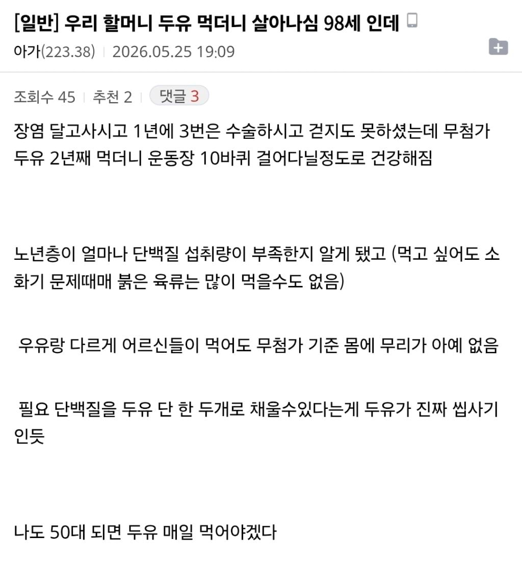

단백질보충으로 나쁘지않은듯

단백질보충으로 나쁘지않은듯
무첨가 바이럴이잔아
부모님 두분 아침마다 두유제조기로 두유 만들어먹는중
우리 엄마도 미리 먹여둘까..
두유 홈플러스 1리터에 1천원임
홈플러스 두유 개추 강추
무첨가인지는 잘 모르겟고
유당불내증 없어서 아침마다 우유 조지는데 두유랑 차이 좀 있음?
우유 = 소젖
두유 = 콩물
동물성단백질/식물성 단백질
둘 중에 머가나음?
단백질합성에 유리한건 동물성이지
어차피 반찬들 먹으면서 당분도 먹으니까 꼭 무첨가 두유 아니어도 됨
난 우리 할머니 A2 우유 + 초코맛 ISP 콩단백 + 크레아틴 타서 매일 아침이나 저녁에 먹게 루틴화 해드림
단백진짜필요
대두단백
이거보고 콩물 1리터넘는거 원샷했다
아프면 단백질 보충 소흘해질 수 있음 죽 이런거 먹다가
난 그래서 할매한테 더단백 프로팀드링크 내가먹던거 영업해서 먹으라고 맛보여주고
주기적으로 보내줌
난 평균보다 동물성 단백질 섭취가 많다고 생각하는데 운동하면서 그 정도 안 먹으면 몸이 힘들기도 하고
근데 올해 대장 내시경에서 작은거 세개 뗐는데 야채를 더 먹어야 될 듯
시부랄 그렇다고 프로틴 파우더 먹이진마라 신장망가지신다 이새끼들아
젊으니까 그나마 수압으로 밀어내서 버티지 수업도 약한데 돌 넣으면 난리난다
저 앞에 애들은 갠찮다는대 뭐가 맞음
괜찮은게 맞음
권장량 내에서 문제있다는 근거가져오라하면 못가져온다ㅋㅋ
용량이 중요한거고 노인들은 흡수율 떨어져서 보충제가 낫다ㅋㅋ
꼭 하나만 아는 애들이 자기가 아는 하나에 맞으면 문제 없는 줄 앎. '권장량 내'라니 뭐 정해진 권장량이라도 있는 줄.
구라ㄴㄴ
당뇨 환자는 안되겠지?
당뇨있으면은 단백질파우더 무향으로 먹으면 되지않을까?
대체식이라 방향성이 살짝 다르긴 한데 뉴케어 당뇨환자용 나오는거 있음
영양이 진짜 중요함
먹을수 있는것 보단 못 먹는게 늘어남
장인어르신 68세이신데
처음에 소 그다음 돼지 닭 못드시게됨
생선만 조금 드실수 있으심
몸이 이겨내던 알레르기가
면역력 떯어지니 다 나타나시는듯
아이고
난 엄마 아몬드우유 그거 계속 사주는데 배 안아프고 맛있다 하심